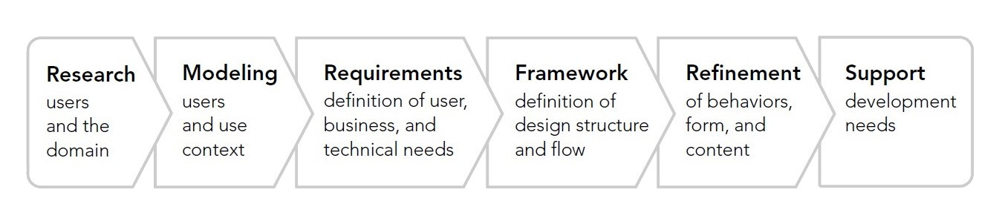

Analysis
Before you judge users, walk a mile in their shoes

Goal-directed design
What the Goal-Directed Design process does is provide a problem knowing process. What problem are you solving and what are the salient parts of the problem? What is really critical?
We will take a closer look at the first four steps later for the "Analysis" tasks. Feel free to already discover more about the methods:
Mental Models
Mental models can be discovered by interviewing potential users applying the Thinking-Aloud technique, as you will do for an assignment in iteration 1.
Further reading
"Inside Goal-Directed Design: A Two-Part Conversation With Alan Cooper" by Caroline Kraus, interview
"Mental Models" by Jakob Nielsen, online article
"6 Examples of Context of Use" by John Spacey, online article